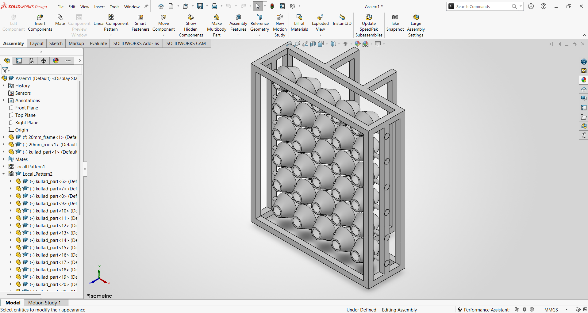

Temperature drop
Inlet air temperature behind the fans and outlet air temperature in front of the pots, at documented positions. ΔT = inlet − outlet.

Group 17 · Sanjivani University · Makerspace
A student prototype testing whether wetted, unglazed clay pots and two rear-mounted fans can measurably cool the room air the fans blow forward through them. The prototype is assembled; testing is pending, so no cooling results are claimed.
Team Tanmay Nilesh Pendbhaje · Harshal Kotame · Vedant Khairnar · Tanmay Mhaske
3D visualisation SolidWorks export and documented dimensions; fans approximate. Not a photograph.
02
During a summer internship at Tinkerers' Lab, Sanjivani University, we looked for practical cooling approaches built from accessible materials, without starting from a conventional room air conditioner.
We compared three established directions — natural-fibre evaporative coolers, cellulose or honeycomb pads, and vapour-compression air conditioning. None can be ranked fairly without considering climate, cost, maintenance, airflow, water and electricity. We chose to test a fourth option: hollow, unglazed clay pots as the wetted medium, held in a welded frame and supplied with recirculating water.
| Approach | Potential advantages | Limitations and considerations |
|---|---|---|
| Grass / natural-fibre coolers | Local media; simple construction; evaporation instead of a compressor. | Performance and life depend on fibre, packing, water distribution and cleaning. Limited by ambient humidity; adds moisture. |
| Cellulose / honeycomb pads | Repeatable air passages and large wetted area; established designs. | Need even wetting and cleaning; deposits reduce performance; water is consumed. |
| Vapour-compression air conditioning | Controlled cooling across a wide humidity range; can dehumidify. | Compressor and refrigerant circuit; energy use depends on efficiency, sizing and climate. |
| ClayBreeze (this prototype) | Tests whether readily available unglazed clay pots can serve as the wetted medium. | Performance unknown. Wetting, bypass airflow, water use and service life must be measured. |
The question we are answering
Can a prototype using hollow, unglazed clay pots, recirculating water and fan-assisted airflow produce a measurable reduction in air temperature under defined conditions, with practical water use, adequate airflow and safe operation?
03
When water evaporates from a wet surface it absorbs heat. If the clay pots stay wet and air is blown across them, the air leaving the assembly can be cooler — and it is always more humid. The two fans are mounted at the rear on the extension frame: they take in room air from behind and blow it forward through and around the pots, out of the front into the room. Because the pots do not seal against each other or the frame, some air bypasses them; that has not been measured.
Airflow direction confirmed by the team: the two fans on the rear extension blow room air forward through and around the pots and out of the front. Pump, reservoir and tubing are installed (reported by team; photo evidence pending). Their positions here are illustrative. Water circulation is PENDING — not yet commissioned or verified.
Direct evaporative cooling has more potential in hot, dry air. As incoming humidity rises, the possible cooling falls, and the air leaving is always more humid than the air entering. We will measure temperature and humidity together.
04
How the prototype was built, in order, with the real workshop photographs. Click any photo to enlarge it. No dates are shown because none have been recorded.
05
The SolidWorks drawing is the source of the design dimensions. These are design values; the fabricated frame has had a visual inspection, but its as-built measurements are still pending.
The rod part file is named 20mm_rod in SolidWorks, but the drawing calls the rod out at ⌀12 mm — and ⌀12 mm matches the physical rods. The “20 mm” refers to the square pipe of the frame. It is a file-naming issue, not a dimension conflict.
06
Drag to orbit, scroll or pinch to zoom, and click or tap a part to see what it is and its status. Switch to SolidWorks model to see the team’s CAD export. Arrow keys orbit when the viewer has focus.
Water system: schematic — positions not documented
Conceptual airflow — not measured. Rear fans blow room air forward through and around the pots.
SolidWorks export: frame, rods and pots. Fans are not in the export and are shown from the approximate model. Explode, layers and part details use the interactive model.
3D view unavailable in this browser — showing the real SolidWorks assembly screenshot instead.
07
What the team has wired and programmed, and what is planned or proposed. The firmware is not yet in this repository, and the control behaviour will be verified during testing. Full detail: electronics-and-control.md.
08
No results yet. Nothing below has been measured. This is the plan for testing the assembled prototype after staged commissioning.
Inlet air temperature behind the fans and outlet air temperature in front of the pots, at documented positions. ΔT = inlet − outlet.
Inlet and outlet RH measured at the same time as temperature, because RH depends on temperature.
Anemometer readings at documented points, if an instrument is available. One point is not total flow.
Reservoir level or mass at the start and end of a timed run; leaks, splashes and refills noted separately.
Fan and pump nameplate ratings, plus measured power only where it can be done safely.
Method. Compare a fan-only run with dry pots against a wetted-pot run, keeping fan setting, sensor positions and duration the same, and recording ambient temperature and humidity for each run. Repeat runs where possible. Raw readings go into data/test-data-template.csv (currently a blank header). Full protocol: testing-and-results.md.
09
10
Every real workshop photograph and SolidWorks screenshot in the repository. No stock or generated images. Categories without any images yet are disabled.
11
Prototype assembled — testing pending
12